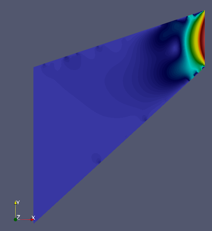

ロードバイクと空気抵抗
ロードバイクの走行時の最大の抵抗は空気抵抗である。ゆえに集団で走る時は風除けの仕事を交代で行い、全体の空気抵抗を削減しようとする（写真の先頭は先頭を引く仕事中の私である）。現在、自転車メーカーは空気抵抗を1wでも削減するために多大な努力をしている。空気抵抗削減の方法はいくつかあるが、その一つがブレーキや変速に必要なワイヤーをフレーム内に納めることである（内装化）。しかしながらそのようなハイスペックの自転車は非常に高価であり、またそれ以前の時代の自転車を所有している人にはワイヤーの発する空気抵抗を削減する方法は存在しなかった。私は東工大で機械工学と流体力学、そしてシミュレーションツールの使い方を学んだ。それらの知識を生かして私は後付けできる空力パーツの開発を行った。
ブレーキワイヤーのエアロカバーの開発

アイデアは単純である。円筒形をしたブレーキワイヤーに柔軟性を持った翼断面をしたカバーを装着することにより、空気抵抗の削減を狙うものである。CFD(コンピュータ流体シミュレーション)を用いて最適な形状を導き出した後、町工場にお願いをし、シリコンで試作品を作成した。また、そのカバーの装着によって実際に空気抵抗が削減できているのかを調べるために、小型の風洞を自ら開発し、それを用いて検証を行った。先行する研究のデータを用いて校正されたその風洞は、確かにエアロカバーによって空気抵抗が削減されていることを証明した。パーツの試作後、いくつかの企業にアイデアの提案を行った。ディスクブレーキの普及に伴い、ケーブルが外に剥き出しのリムブレーキ自転車の数が今後少なくなることから残念ながら採用には至らなかったが、企画から提案までを一人でやり通す良い経験となった。
流体シミュレーションへの理解
現在シミュレーションはさまざまな分野の開発の現場において欠かせないものとなっている。しかしながらシミュレーションはその手法やコンピュータリソースの制約、使用するモデル(または支配方程式)の特性からその精度には制限があり、得られた結果の正しさはその前提条件に強く依存する。
エアロカバーの開発においても、最初に使用した乱流モデルでは境界層に弱点があるために文献にある信頼できる実験値と結果に差が生じてしまった。そのため実験値と近くなるモデルを探す必要があった。このように、正しくシミュレーションを使用するためにはシミュレーション（ここでは流体シミュレーション・数値解析）への正しい理解が必要である。
私はシュトゥットガルトの大学で流体数値解析で用いられる主な3つの手法（有限差分法(FDM),有限要素法(FEM),有限体積法(FVM))を学習し、また簡単な問題に対して実際に実装した。以下それぞれの概要である。
有限差分法
温度の高い流体が冷たい金属板に触れた時の温度分布を定常状態になるまでシミュレーションした。(なお定常状態に達するには非常に長い時間がかかるため、以下のGif画像は定常状態になる前に終了させている。)

有限要素法
有限要素法は構造物やマッハ数の低い流体に用いられる手法である。私は単純なトラス構造の構造物の計算を通してその仕組みを理解した後、Python用のプロジェクトであるFEniCSを用いてクックの薄膜(Cook's membrane)におけるストークス問題を計算した。FEniCSは大学や研究所が共同開発した有限要素法のパッケージであり、Pythonのインターフェイスを用いて支配方程式や境界条件を直接入力することでシミュレーションを行うことができる。計算に用いる要素の種類も非常に多種多様であり、問題の特徴に応じた手法を選択できる。
下図ではクックの薄膜の計算結果を表示している。左辺は固定されており、右辺に流体の剪断応力が上方向にかかった時の速度分布を表している。
有限体積法
有限体積法は保存量に注目して計算する手法であり、衝撃波など有限差分法・有限要素法では計算が難しい/不可能な問題にも応用できる。ゆえに航空分野で用いられる数値流体シミュレーションの多くの場合でこの手法が用いられる。私はさまざまなnumerical fluxの計算手法や境界条件、空間・時間の離散化と解法をFortranにで実際に実装し、その挙動を確かめた。
下のgif画像は円筒の周りを流れる流体をナビエストークス方程式を用いて計算している。ストークス方程式やポテンシャル流れでは現れないカルマン渦が発生していることが確認できる。